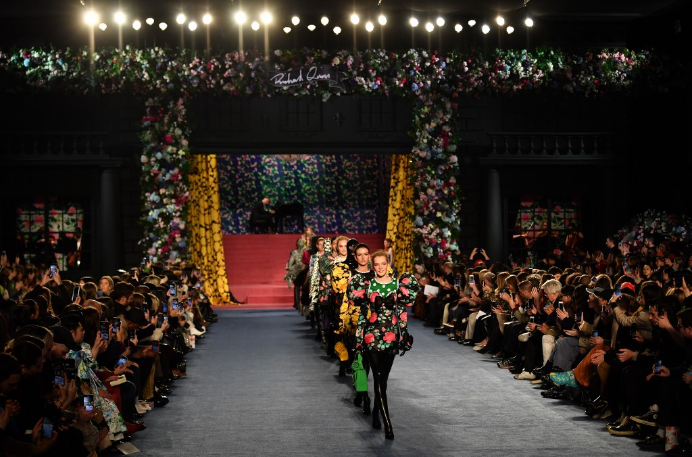
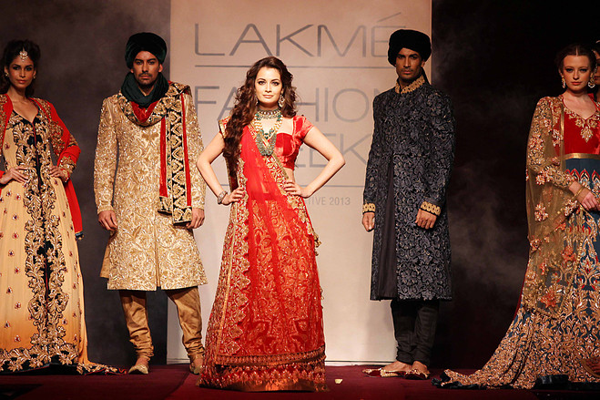
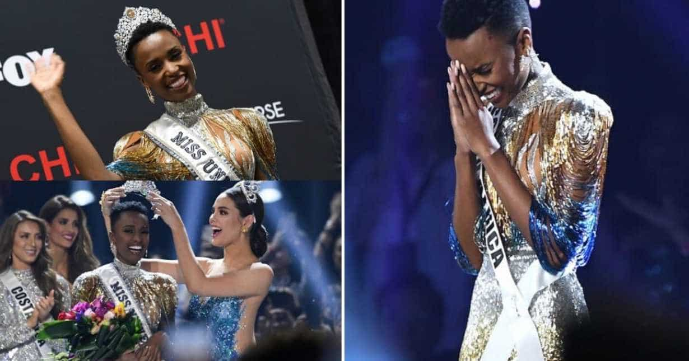

This is the list of fashion weeks/events/shows held annually or two times a year all around the world. There are five main events in the world: the Paris Fashion Week, Milan Fashion Week, New York Fashion Week, London Fashion Week and Arab Fashion Week..
A fashion show (French défilé de mode) is an event put on by a fashion designer to showcase their upcoming line of clothing and/or accessories during a fashion week. Fashion shows debut every season, particularly the Spring/Summer and Fall/Winter seasons.